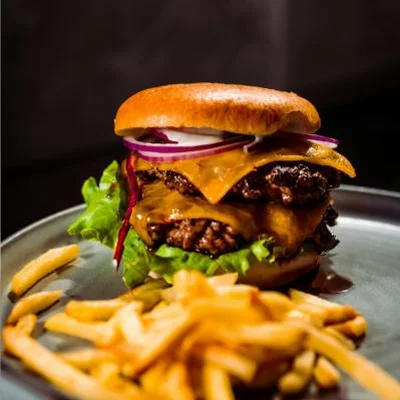
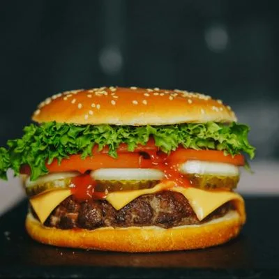
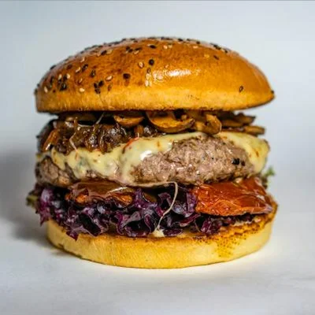

La Clásica
$28.000Doble carne de plantas, queso vegetal y pepinillos.

Brote hace hamburguesas jugosas, con costra y todo el sabor, pero hechas 100 % con plantas. Pruébala y nos cuentas.
Ver el menú →
Doble carne de plantas, queso vegetal y pepinillos.

Jalapeños, salsa chipotle y cebolla crocante.

Hamburguesa, papas rústicas y limonada de coco.